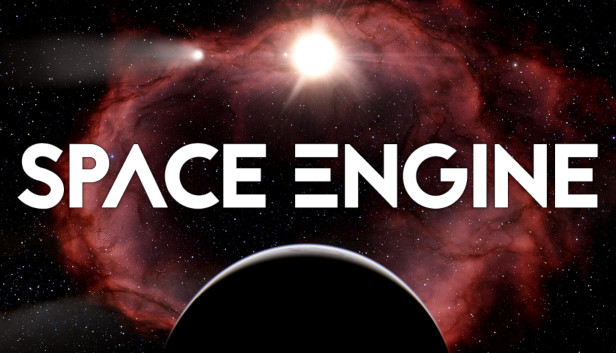
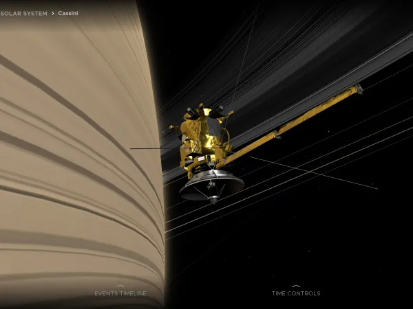

Space Engine is a virtual simulation where you can explore space, land on any planet, and even alter the speed of time to look in the future or past.
This app is perfect for anyone wanting to explore space and answer questions they may have, such as what would happen if Earth were as big as Jupiter?
This helps with a greater understanding of how celestial bodies function and how they would react in different situations, with a visual representation.
This app is also free which makes it more accessible to a wider audience.
On this Section of NASA's website, you can look at many 3D models of things, such as a recreation of a rover landing or tracking asteroids, all in 3D.
It's easy to use, especially since the instructions are seen in the Simulation, so you can know how to explore around the simulation
You can learn more about how rovers land on different atmospheres or explore different planets, as well On this website , it shows the signals we get from space to earth in real time, which isn't exactly 3D, but is still a cool simulation on that website
